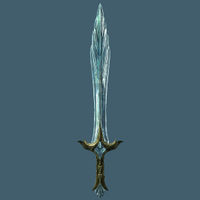
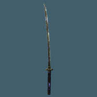

Armas Lendárias
Blade of Woe

A Blade of Woe é uma adaga bem conhecida dos fãs da franquia The Elder Scrolls, já que ela é quase sempre dada aos membros da guilda Dark Brotherhood nos games da série. Desta vez, você pode consegui-la de duas maneiras: através de um NPC durante a missão “Death Incarnate” ou se você decidir matar e roubar a personagem Astrid durante a quest “With Friends Like These”.
O problema da segunda opção é que se você matar Astrid, não terá como entrar na Dark Brotherhood, já que sua próxima missão será a de destruir essa guilda completamente. Seu dano base é de 12 e ela possui um encantamento que absorve 10 pontos de vida com cada ataque.
Chillrend

Como mencionamos anteriormente, a Chillrend é a arma especial mais poderosa de jogo se você a encontrar depois que chegar no nível 46, então nem vale a pena tentar fazer isso antes. Para consegui-la, entre na Thieves Guild e comece a fazer todas as missões até chegar na “The Purist”.
Você precisará entrar na casa de Mercer Frey e abrir a fechadura de um tipo de vitrine em um dos últimos cômodos, já que é lá que a Chillrend estará guardada. Tenha em mente que só o fato de você entrar nessa casa já ajustará a espada ao mesmo nível que o seu, então não adianta fazer a missão cedo e vir buscar a arma quando estiver mais forte. A Chillrend possui um encantamento que causa dano de gelo aos inimigos e ainda tem a possibilidade de paralisá-los com cada ataque.
Mace of Molag Bal

O Mace of Molag Bal é uma das armas mais fortes de Skyrim e é dado ao seu personagem por ninguém menos do que Molag Bal, um dos príncipes Daedric mais poderosos da franquia. Para consegui-la, vá para a cidade de Markarth e complete a missão “House of Horrors”.
Ele possui um dano base de 16 e um encantamento que causa 25 pontos de dano de Stamina e Magicka. Além disso, se o inimigo morrer em 3 segundos depois de ser atacado com esta arma, ele encherá uma Soul Gem automaticamente.
Miraak’s Sword

A Miraak’s Sword é outra espada bem poderosa, mas que foi adicionada só com o DLC Dragonborn. Para consegui-la, vá para a ilha de Solstheim e simplesmente complete todas missões principais deste DLC, que conta como Miraak como principal inimigo.
Ao terminar a última missão “At the Summit of Apocrypha”, você terá a chance de pegar a espada como prêmio. A arma também se equivale ao nível do seu personagem, mas possui um encantamento absorve Stamina dos inimigos a cada golpe.
Dragonbane

A Dragonbane é uma espada encontrada como parte das missões principais da história do jogo, então é bem fácil de conseguir. Você pode achá-la em dos cômodos do Sky Haven Temple enquanto estiver fazendo a missão “Alduin’s Wall”.
Seu poder também se equivale ao nível do seu personagem, mas o interessante é que ela causa dano extra a qualquer dragão e dano de choque à inimigos comuns.
Rueful Axe

O Rueful Axe até que também é bem poderoso e pode ser encontrado durante a missão “A Daedra’s Best Friend” depois que você atingir o nível 10. Basicamente, será necessário matar o cachorro Barbas com este machado no final da missão e a arma poderá ser mantida como prêmio.
Só tenha em mente que se fizer isso, você não receberá o “Masque of Clavicus Vile”, um dos vários artefatos Daedric do jogo. De qualquer forma, o Rueful Axe tem um dano base de 22 e também causa dano à Stamina do inimigo.
Bloodskal Blade

O Bloodskal Blade é outra arma adicionada ao jogo com o DLC Dragonborn. Ela pode ser encontrada durante a missão “The Final Descent” através do NPC Crescius em Raven Rock Mine.
Ela possui um dano base de 21, mas também possui um efeito interessante ao se fazer um ataque mais forte, já que uma energia extra é liberada e causa 30 pontos de dano ao inimigo atingido.
Nightingale Bow

Este lindo arco pode ser obtido através das quests principais da Thieves Guild e pertence originalmente à personagem Karliah, que se torna sua seguidora temporariamente.
Para conseguir o Nightingale Bow, você deverá terminar a missão “Blindsighted”. Como esta arma tem o poder equivalente ao seu nível, é melhor esperar até atingir o nível 46 para fazer a quest.